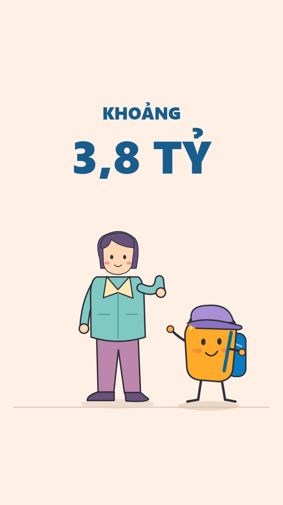
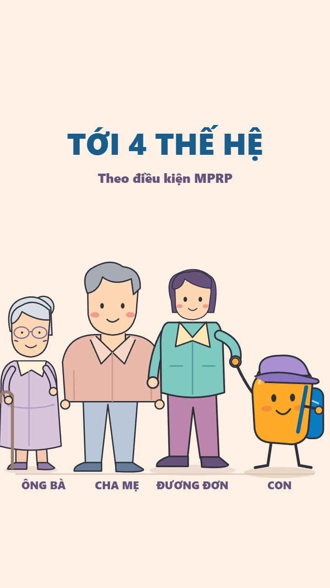
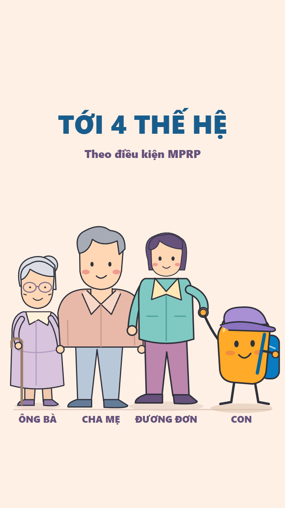
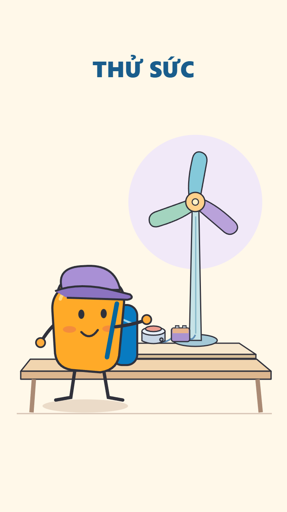
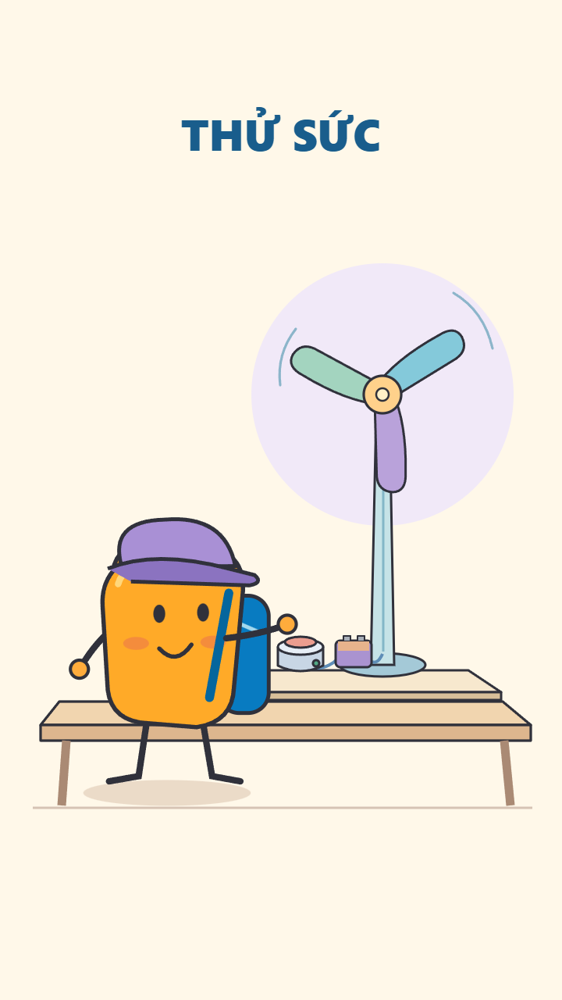

Thiết kế frame S10 và S12 R1 đã được duyệt ngày 27/10/2026. Sáu pose tham chiếu tĩnh. Pilot motion R1 đã dựng riêng và đang chờ duyệt. S10 = voice 11; S12 = voice 14.
Đạo diễn hành động · S06/S11 đã duyệt
Khoảng 3,8 tỷ → nhóm bốn thế hệ rõ tuổi tác/quan hệ. Nhãn quan hệ tính theo đương đơn. Giá là nội dung đã được chủ dự án xác nhận; giữ điều kiện MPRP.



Mascot bấm nút cho mô hình chong chóng chạy, rồi quan sát kết quả. Đây là ví dụ hoạt động học hỏi, không phải cam kết học tập/việc làm.


Đã duyệt thiết kế hình S10/S12. Bước tiếp theo: dựng hai pilot riêng để duyệt motion; chưa thay master.